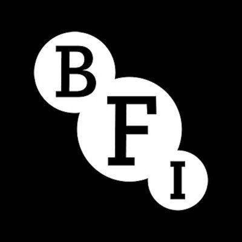
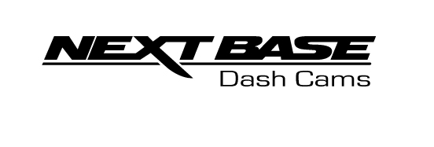
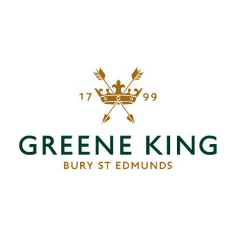
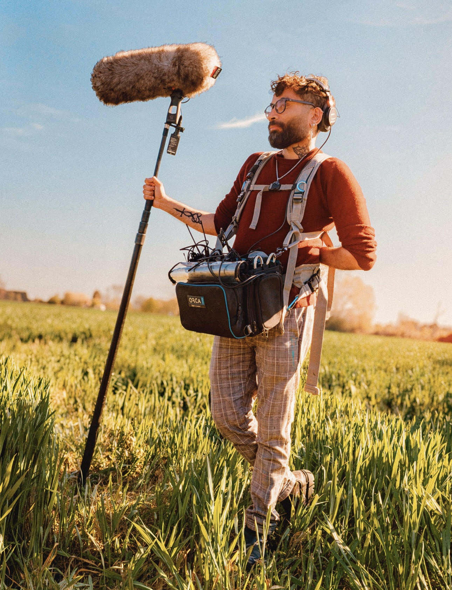

Some work examples of commercial and corporate content, including work for major UK and international brands.
Sound Recordist
ITV
Sound Recordist
Sound Recordist | Sound Editor
DOCUMENTARY
Some examples of documentaries I’ve worked on, making it to streaming platforms and broadcast, including Amazon Prime, Al-Arab TV and British Muslim TV.
Sound Recordist
Amazon Prime
Sound Recordist
Promo for I Could Never Go Vegan
Sound Editor
Al-Arab TV | British Muslim TV
FICTION
Samples of fiction work, including indie features and short films screened at festivals like FrightFest, also available to stream on online platforms such as Alter and Amazon Prime.
Sound Recordist
FrightFest Film Festival | Winner of Best Northern Feature at Dead Northern Film Festival | Amazon Prime
Sound Recordist | Sound Designer
Sound Recordist
Reels
Showreels demonstrating production sound recording and sound editing work across documentary, fiction and commercial productions.
Kit
Professional location sound recording equipment, including industry-standard recorders, microphones, radio systems and accessories.
Recorders & Timecode
Sound Devices MixPre-10 II
Zoom F8n
Zoom F-Control
Zoom H6
Tentacle Sync E
"Having Waqar on a project is always a bonus, not just because of his dedication and expertise but because of the energy and positivity he brings to set. He's always prepared, delivers exceptional work and is a valued and generous collaborator."
Brett Chapman Director & Filmmaker
"Waqar is always great to work with, he's extremely passionate about what he does and is always upbeat, even during the longer shoots."
Ben Harrap
"We have used Waqar Shah on numerous diverse projects and I highly recommend his skills. Each time has been a great collaboration. Waqar brings with him a calm professionalism and enthusiasm, that assures me that he can and will produce some high end sound for us to work with."
Waqar has provided sound recording and post-production audio services for leading UK and international brands and broadcasters.



About

Waqar is a Queer Sheffield-based Sound Recordist and Sound Editor, with almost a decade of experience in film and video productions across Yorkshire and the North of England. His work spans documentaries, commercials, short films and indie features, having worked with clients such as BBC, BFI, Lego, Warp Films, Google UK and Netflix.
Whilst based in Sheffield, South Yorkshire, Waqar is available for sound recording projects across the whole of the UK — regularly working in London, Manchester, Leeds, Liverpool, Birmingham, Cardiff, Glasgow and Edinburgh, as well as occasionally abroad.